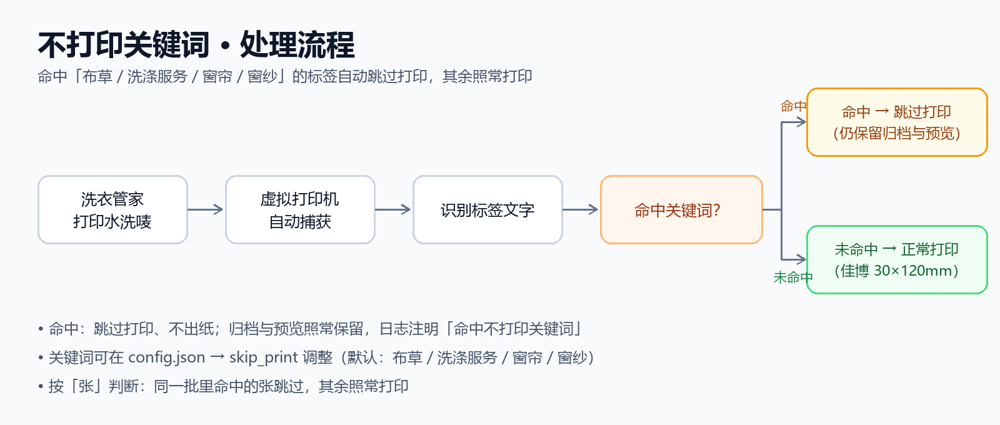

01交付概述
本报告面向「星期衣精致洗衣」门店的水洗唛打印场景：洗衣管家打印出的水洗唛为 120×30 毫米横版版面，而门店标签机（佳博 GP-9134T）按 30×120 毫米竖版出纸。此前每张标签都需要人工「另存 PDF → 旋转 → 再打印」，步骤繁琐且容易出错。
「水洗唛打印助手」v2.1 已完成开发并通过全链路实测。本版本按现场反馈进一步精简与增强：去掉页面编辑类功能，聚焦「打印转换」这一核心能力；软件改为后台静默运行（开机自动启动），并提供统一的「操作页面」，状态查看与日常操作都在一个界面完成。
| 成果 | 内容 | 位置 |
|---|---|---|
| 自动打印工具 | 虚拟打印机捕获、截取对齐、旋转、送印、归档、日志 | E:\软件开发\水洗唛打印助手 |
| 专属虚拟打印机 | 「水洗唛打印助手」：由工具创建与管理，打印任务自动写入捕获文件 | 安装虚拟打印机.cmd / 卸载虚拟打印机.cmd |
| 操作页面 | 统一的浏览器操作界面：状态总览、打印校准唛、目录快捷入口、日志查看 | 打开操作页面.cmd |
| 后台常驻 | 静默运行（无窗口），开机自动启动，无需手动干预 | 停止软件.cmd / 安装开机自启.ps1 |
| 操作脚本 | 启动/停止监视、校准打印、开机自启安装等 | 工具目录（根目录） |
| 使用说明（本文） | 原理、操作、校准、常见问题 | 使用说明与交付报告.docx / 使用说明.html |
截至 2026 年 9 月 22 日，v2.1 核心功能全部实测通过（详见第 5 章）：后台服务与操作页面、高速捕获（连续打印无丢失）、单实例防护、开机自启注册、物理出纸烟测均已完成；旋转方向默认采用「顺时针」，并已提供两版校准唛供现场比对，确认后即为最终配置。
02背景与方案设计
2.1 原有流程的问题
原流程需要人工执行四个步骤：打印预览、另存为 PDF、旋转 90 度、再发送到标签机。存在三个问题：一是操作繁琐，每张标签都要重复；二是旋转依靠人工判断，容易方向出错；三是中间 PDF 分散各处，日后补打、对账不便。v1.0 曾借助第三方虚拟打印机的自动保存目录完成捕获，但依赖外部软件（pdfFactory）的配置，链路较长。
2.2 自动化方案（v2.1 架构）
工具采用「自建虚拟打印机」架构：由工具创建一台专属虚拟打印机「水洗唛打印助手」（基于 Windows 内置的 Microsoft Print To PDF 驱动 + 文件端口）。洗衣管家打印水洗唛时选择该打印机，打印任务会被静默写成一个捕获文件；工具以高频监视捕获文件的每个新版本，自动完成 截取标签区域 → 版面对齐 → 旋转排版 → 送印 → 归档 全流程。整个过程不再经过 pdfFactory 等第三方软件，链路更短、更稳定。
v2.1 起，软件以「后台服务」方式常驻运行（开机自动启动、无窗口），并配套一个本地「操作页面」：查看运行状态、打印校准唛、打开各目录、查看日志都在这里完成。同时下线了页面编辑类功能，只保留最基本的打印转换能力。
2.3 关键设计决策
- 不侵入原则——不改造洗衣管家、不修改其业务数据，只新增一台打印设备并使用打印链路；洗衣管家配置改动前均已备份，可随时回退。
- 自建虚拟打印机——打印机由工具安装脚本创建（约 10 秒，需管理员确认一次），日常无需任何维护；可随时用卸载脚本移除。
- 安全闸——只自动处理内容位于标签区域内的捕获文件；不符合的文件（如整页文档）会被移入
out\hold目录待人工确认，避免误打。 - 可追溯——每个标签自动归档 PDF 原件与位图预览，补打、对账、复查都方便。
- 默认全自动——捕获成功即自动送印；如需「先预览再打印」，可将自动化模式切换为
dry_run（只预览不打印）。
03快速上手
3.1 日常使用
- 双击「打开操作页面.cmd」：软件在后台静默启动（无窗口），浏览器自动打开操作页面（以后随时打开都用它）。
- 照常打印水洗唛：打印时选择「水洗唛打印助手」。
- 完成：工具自动截取、旋转并打印到「水洗唛」，同时归档——全程无需其他操作。
3.2 操作页面
操作页面是软件的统一界面（浏览器打开，地址为 http://127.0.0.1:8787/，仅本机可访问）：
| 区域 / 按钮 | 功能 |
|---|---|
| 软件状态 | 运行状态、启动时间、监视目录、捕获文件与最后刷新时间（每 3 秒自动更新） |
| 虚拟打印机 | 查看设备状态；一键「安装 / 修复」 |
| 打印校准唛（两版） | 打印顺时针、逆时针两版校准标签 |
| 归档 / 预览 / 日志 / 手动投递目录 | 一键打开对应文件夹 |
| 最近处理（归档） | 最近打印记录一览 |
| 运行日志 | 最近 12 行日志，排查问题时先看这里 |
3.3 第一次使用建议
建议先手动打印一张真实水洗唛试跑：确认标签方向、内容完整性后，再进入日常使用。若方向与预期相反，按第 4 章切换旋转方向即可。测试期间打印的测试唛（含校准唛）内容均为样例数据，可直接丢弃。软件已设置开机自启：以后电脑开机后会自动在后台运行，无需手动启动。
04校准与设置
4.1 旋转方向校准
不同门店的标签机安装方向、耗材方向可能存在差异，工具提供两版校准样张：双击「打印校准唛.cmd」，会连续打印两张测试标签——第 1 版为顺时针旋转、第 2 版为逆时针旋转。选择与门店日常输出一致的方向后，在配置文件中设置。
默认值：rotate_dir 为 cw（顺时针）。如需改为逆时针：将 config.json 中 rotate_dir 的值改为 ccw，保存后重启软件即可生效（双击「停止软件.cmd」后再双击「打开操作页面.cmd」）。
4.2 常用配置项
| 配置项 | 默认值 | 说明 |
|---|---|---|
watch.dirs | 自动保存目录、D:\水洗唛输出、inbox | 需要监视的目录列表 |
watch.stable_seconds | 8 | 文件连续多少秒不再变化才判定为写入完成 |
pipeline.rotate_dir | cw | 旋转方向：cw 顺时针 / ccw 逆时针 |
pipeline.offset_mm | [0, 0] | 打印位置微调（毫米）；如整体右移 0.5 毫米填 [0.5, 0] |
pipeline.crop_pad_mm | 0.5 | 内容裁剪留边（毫米） |
print.printer | 水洗唛 | 目标标签机名称 |
print.dither | true | 灰度抖动；如文字发虚可改为 false |
capture.slot_file | spool\capture.pdf | 虚拟打印机捕获文件位置（勿改） |
capture.crop_mm | [0, 0, 120, 30] | 从捕获页左上角截取的标签区域（毫米） |
capture.shift_mm | [2.03, 0] | 版面对齐微调（对齐旧版式，一般勿改） |
automation.mode | auto | auto 自动打印；dry_run 只预览不打印 |
skip_print.keywords | 布草 / 洗涤服务 / 窗帘 / 窗纱 | 命中这些关键词的标签不打印（仅保留归档与预览） |
配置文件位于工具目录根下（config.json），可用记事本编辑；修改后请重启软件（「停止软件.cmd」后重新「打开操作页面.cmd」）生效。
4.3 虚拟打印机维护
虚拟打印机「水洗唛打印助手」由工具创建和管理：
- 状态检查——操作页面 →「虚拟打印机」，查看端口与设备状态。
- 安装/修复——双击「安装虚拟打印机.cmd」（会请求一次管理员确认），可重复运行。
- 卸载——双击「卸载虚拟打印机.cmd」，移除虚拟打印机与端口（不影响标签机与洗衣管家）。
- 说明——虚拟打印机基于 Windows 内置 PDF 驱动，不额外安装任何软件；打印任务写入
spool\capture.pdf捕获文件，由工具实时读取。
05测试与验收记录
5.1 测试环境
| 项目 | 说明 |
|---|---|
| 门店工作机 | Windows 11（xqyjzxy） |
| 洗衣管家 | 单机版 v6.1.23 |
| 虚拟打印机 | 「水洗唛打印助手」（工具自建：Microsoft Print To PDF 驱动 + 文件端口） |
| 标签打印机 | 佳博 GP-9134T（水洗唛，300 dpi） |
| 标签规格 | 30×120 毫米竖版（设计版面 120×30 毫米横版） |
| 工具版本 | v2.1（Python 3.14） |
5.2 测试记录
| 序号 | 测试项目 | 方法 | 结果 |
|---|---|---|---|
| 1 | 虚拟打印机创建 | 执行安装脚本创建「水洗唛打印助手」并检查端口/驱动 | 通过（约 10 秒完成，可重复运行） |
| 2 | 后台服务与操作页面 | 启动后台服务，检查操作页面与状态接口 | 通过（页面正常打开，状态实时刷新） |
| 3 | 单实例防护 | 重复启动软件，检查第二个实例是否被拦截 | 通过（第二个实例自动退出，不会重复处理） |
| 4 | 开机自启 | 安装开机自启任务并检查注册状态 | 通过（任务已注册，登录后自动运行） |
| 5 | 捕获链路 | 打印测试页到「水洗唛打印助手」，检查捕获与处理 | 通过（静默写入、自动送印、归档） |
| 6 | 连打抗丢失 | 瞬间连续发起 3 笔打印任务 × 3 轮 | 通过（9/9 全部捕获，逐张处理） |
| 7 | 版面对齐 | 真实样例经新链路与旧版式逐像素比对 | 通过（位置偏差 ≤1 像素；对齐补偿生效） |
| 8 | 物理烟测 | 真实样例经全链路打印实体标签 | 通过（标签机实际出纸，边距与原版式一致） |
5.3 待确认事项与验收结论
待确认事项：① 旋转方向需现场目检两张校准唛后最终确认（默认顺时针）；② 洗衣管家打印设备已指向「水洗唛打印助手」，建议下一次实际打印时留意首张标签（必要时重启一次洗衣管家）。测试期间打印的测试唛内容均为样例数据，可直接丢弃。
验收结论：除上述现场目检外，v2.1 全部验收项均已通过，工具具备投入日常使用的条件。
06目录与文件说明
| 名称 | 说明 |
|---|---|
| 工具主目录 | E:\软件开发\水洗唛打印助手 |
app\ | 程序代码（watcher 监视引擎、capture 捕获器、console 后台服务、cli 命令行等） |
out\archive\ | 归档：每个标签的 PDF 原件（补打用）；每日自动清理，默认保留最近 7 天 |
out\previews\ | 预览：处理后的标签位图；每日自动清理，默认保留最近 7 天 |
out\logs\ | 运行日志（排查问题先看这里） |
inbox\ | 手动投递目录：放入 PDF 会被自动处理 |
spool\ | 虚拟打印机捕获文件与作业暂存（运行数据） |
web\ | 操作页面（本地页面文件，可自行调整文案与配色） |
config.json | 配置文件（旋转方向、偏移、监视目录等） |
安装虚拟打印机.cmd / 卸载虚拟打印机.cmd | 创建/移除虚拟打印机「水洗唛打印助手」（需管理员确认一次） |
打开操作页面.cmd / 停止软件.cmd | 启动软件（后台）并打开操作页面 / 停止软件 |
extras\ | 未启用的可选组件存档（布局设计器等，原样保留） |
07常见问题
打印后没有自动出标签？
检查打印时选择的打印机是否为「水洗唛打印助手」，以及软件是否在运行（双击「打开操作页面.cmd」查看状态）；并查看 out\logs 当天日志。
「水洗唛打印助手」打印机不见了？
双击「安装虚拟打印机.cmd」重新安装（约 10 秒）；或打开操作页面查看「虚拟打印机」状态。
想暂停 / 退出软件？
双击「停止软件.cmd」即可；再次使用双击「打开操作页面.cmd」。
标签打印出来方向不对？
见 4.1 节：切换 rotate_dir 后重启软件。
怎么打开操作页面？
双击「打开操作页面.cmd」；软件在后台运行后，浏览器会自动打开页面（地址固定为 http://127.0.0.1:8787/，仅本机可访问）。
有旧标签需要补打？
在 out\archive 找到对应 PDF，拖到「把PDF拖到这里处理.cmd」上即可。
归档和预览会一直堆积吗？
不会。每天自动清理一次，仅保留最近 7 天（天数可在 config.json 的 cleanup.days 调整；设为 0 表示每次清理时清空）。
某些打印内容没有自动输出？
内容不在标签区域内的文件会被安全闸拦下（移入 out\hold），防止误打。
为什么有的水洗唛没有打印？
布草 / 洗涤服务 / 窗帘 / 窗纱等命中「不打印关键词」的标签会自动跳过打印（仍保留在归档与预览中，便于核对）；关键词可在 config.json 的 skip_print 中调整。

电脑重启后需要手动启动吗？
不需要。已设置开机自启，登录电脑后软件会自动在后台运行（无窗口）。
会不会影响洗衣管家？
不会。工具不修改洗衣管家程序与数据，仅使用打印链路。
08已知限制与注意事项
- 虚拟打印机「水洗唛打印助手」基于系统内置驱动，无需额外软件；安装/修复/卸载均通过脚本一键完成。
- 旧通道（pdfFactory「水洗唛转换」自动保存目录）仍被工具兼容监听，作为兜底；如从旧地址打印，同样会被自动处理。
- 捕获文件为「最近一次任务」覆盖写入；工具以高频监视抓取每个新任务，连续打印已实测无丢失；极端场景可对照归档记录补打。
- 归档与预览目录每天自动清理一次，仅保留最近 7 天（可在
config.json的cleanup.days调整）。 - 软件常驻后台运行（无窗口）；日常「打开操作页面.cmd」查看与操作，需要退出时双击「停止软件.cmd」，开机自启可随时用「卸载开机自启.ps1」撤销。
- 操作页面仅监听本机地址（127.0.0.1），不对外网开放；如遇端口被占用，软件会自动尝试相邻端口。
- 页面编辑类功能（布局设计器 / 标签编辑器）已按要求下线，相关组件原样归档在
extras\目录，不影响主链路。 - 正式启用前，请先完成旋转方向目检（见第 4 章）；确认无误即完成全部验收。
09操作页面与后台运行
9.1 操作页面
软件自带一个本地操作页面（浏览器打开，地址 http://127.0.0.1:8787/，仅本机可访问），它是日常唯一的操作界面：查看运行状态与捕获情况、检测/修复虚拟打印机、打印校准唛、打开各目录、查看最近处理与运行日志。
- 打开方式——双击「打开操作页面.cmd」，软件会在后台启动（无窗口）并自动在浏览器打开页面；纯查看时也可重复双击该文件。
- 状态刷新——页面每 3 秒自动更新；连接中断时页面顶部会提示并给出恢复方法。
- 个性化——页面文案与配色都在
web\操作页面.html中，可用记事本修改（文件顶部有修改指引）。
9.2 后台运行与开机自启
- 常驻后台——软件以无窗口方式后台运行，关掉浏览器页面不影响打印处理。
- 开机自启——已安装「登录时自动启动」任务：开机登录后软件自动运行，无需手动操作（可在「任务计划程序」中查看，名称为「水洗唛打印助手」）。
- 退出——双击「停止软件.cmd」停止软件；再次使用双击「打开操作页面.cmd」。
- 防重复——软件具备单实例保护：重复启动会被自动忽略，不会重复打印。